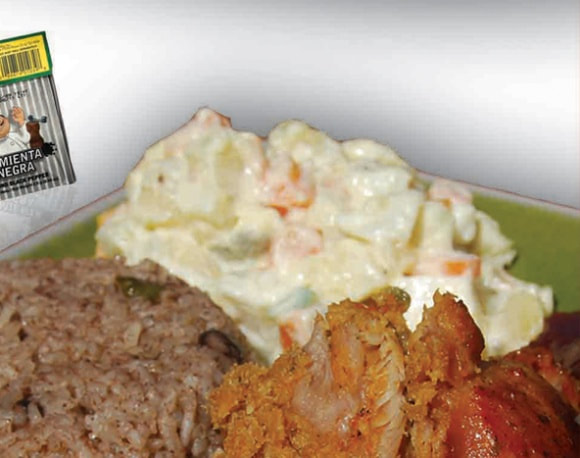

A Caribbean classic, rice and beans is enjoyed by Belizeans from all walks of life. Red beans are cooked with rice along with local spices and plenty of (optional) hot sauce to create this simple yet delicious dish. Often paired with meat, fish, and/or potato salad to create a hearty lunch or dinner.

- * Dry kidney beans 1lb.
- * Rice 3 cups
- * Cloves garlic (1 clove crushed) 5
- * Large onion (peeled and chopped) 1
- * Green pepper (seeded and diced) 1
- * Chopped celery 1 ½ cup
- * Bay leaf 1
- * Minced parsley leaves 1 tbsp.
- * Cans coconut milk 2 (400 ml)
- * Coconut oil 4 tbsp.
- * Black pepper ½ tsp.
- * Salt
- * Water
Rice and beans are a classic one-pot meal in Belize. It is considered a poor man’s dish when made without coconut milk and herbs. It is typically served with a meat or fish dish, potato salad, and fried plantains. This savory dish can be found in food stalls and restaurants across the country.
Directions for Preparing Belize Rice and Beans- 1. Soak the beans overnight, then drain.
- 2. Place the beans in a large pot and pour in adequate water to cover the beans.
- 3. Add 4 of the whole cloves of garlic to the pot of beans.
- 4. Place the pot on the stove and bring it to a boil.
- 5. Cook the beans for about one (1:00) hour or until soft.
- 6. In a separate pan, sauté the crushed garlic clove, onions, celery, bay leaf, and green pepper in a tablespoon of coconut oil, then add this to the pot of beans.
- 7. Add the chopped parsley to the beans, then season with salt and black pepper.
- 8. Rinse and drain the rice, then add to the pot of beans.
- 9. Add the cans of coconut milk and the remaining coconut oil.
- 10. Stir well, adjust the salt and cover the pot with a lid.
- 11. Cook over medium-low heat for forty-five (0:45) minutes until the rice is tender.
- 12. Serve the Beans and Rice with any choice of meat or seafood, along with fried plantains and potato salad
- Prep Time: 15 minutes
- Cook Time: 20 minutes
- Total Time: 35 minutes
- Servings: 8
- * 1 lb Potato
- * 4 Eggs
- * 1 Can Grace Mixed Vegetable
- * 1/2 Cup Grace Mayonnaise
- * 2 Cup Salad Cream
- * 1/2 Cup Grace Evaporated Milk
- * 1 Slice Onion Finely Chopped
- * 1/4 Of A Small Sweet Pepper Finely Chopped
- * Malher Black Pepper To Taste
- * Salt
- * Boil Potato And Eggs.
- * Let Cool.
- * Peel And Dice.
- * Add To Potato And Eggs.
- * Add Grace Mayonnaise, Salad Cream, Milk, Onion, Sweet Pepper And Season.
- * Mix Well And Serve.

Stewed Chicken InstructionsThe ingredients you will need for this recipe include:
- * Whole cut up chicken (you can use other chicken bone in chicken pieces if you prefer)
- * Garlic
- * Olive Oil
- * Goya Sazonador Total (can sub salt and pepper if you can't obtain this ingredient)
- * Maggi Chicken Bouillon seasoning (can sub another brand if you prefer)
- * Thyme (fresh is preferred)
- * Belize Recado rojo, Achiote Rojo, or Marie Sharp's Belizean Season All
- * Chicken broth (recommend to use unsalted)
- * Brown sugar
- * Green bell pepper
- * Onion.
- * Cilantro
- * Salt to taste
- * Pepper to taste
-


All you will need to do to get this delicious taste of Belize,
is to begin by marinating the chicken with a combination of delicious spices.
The marinade ingredients include the Recado rojo (or sub), garlic, thyme, Goya Sazonador Total,
and the Maggi Chicken Bouillon.
You'll want the chicken to marinate preferably overnight,
but at least for one hr in your refrigerator.After marinating,
remove the chicken from the refrigerator. You can let it sit for a few minutes
on the counter to allow it to come to room temperature if you wish.
Next, fry the chicken (Mid Flame) in olive oil and a bit of brown sugar until golden brown .
You most likely will need to fry in batches. Scrape up any burnt or brown bits between batches and remove.
Add chicken broth to cover the chicken, along with some diced green bell pepper, diced onions,
and some extra recado, and simmer covered for around 45 minutes to 1 hr.
You can remove the cover for the last 15 minutes if you like to reduce some of the sauce.
Enjoy the wonderful aromas coming from your kitchen during simmering time!
During simmering the flavors will meld together to make the most delicious chicken which should be
falling off the bone by the end of the simmering time!
Add some cilantro in at the end, and your DELISH stewed chicken is
now ready to serve on to your rice and beans!
I hope by now you may be excited at the prospect of cooking up some
Belizean Stewed Chicken in your kitchen. Please give it a try!
You might find that this will be a go to recipe for your family from now
on because of all the yumminess!